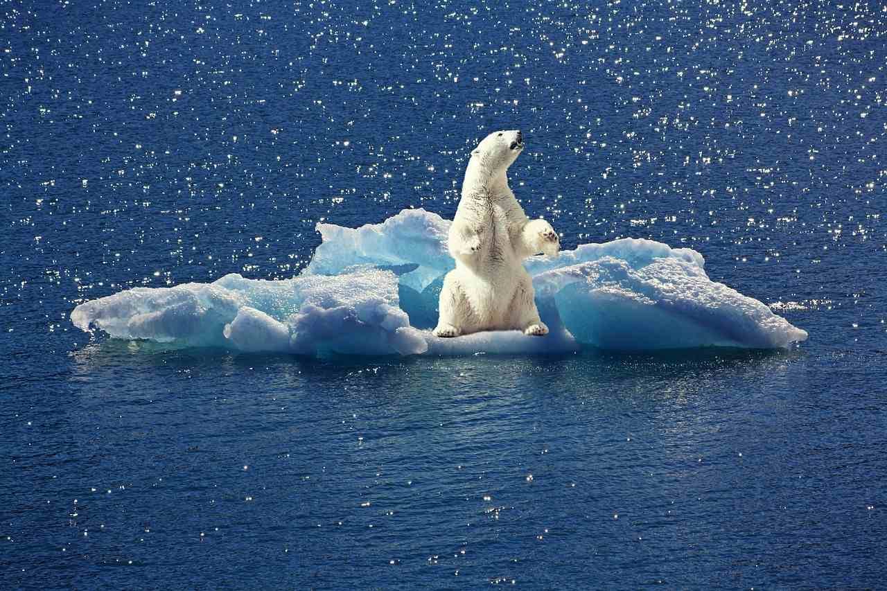
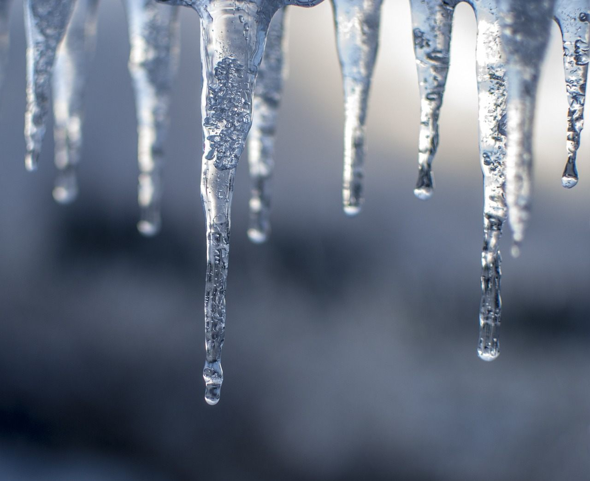
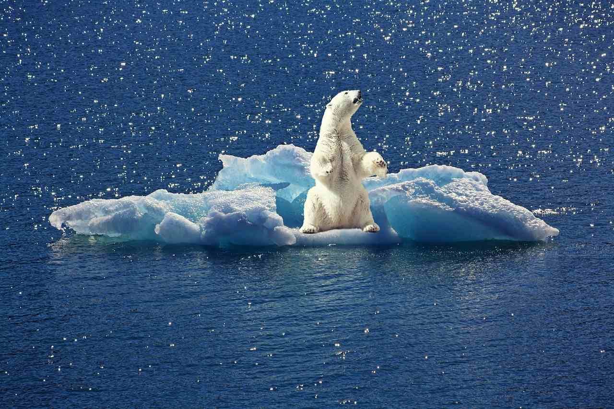
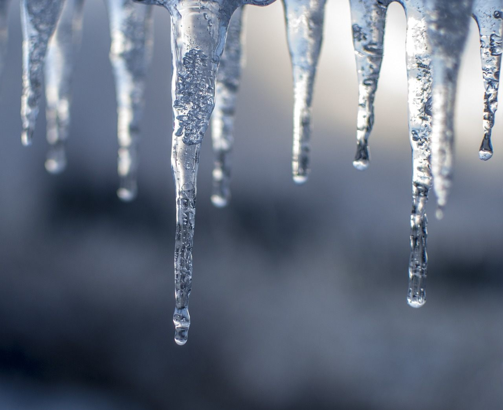

Fight Melting Ices
As environmental activists, we have a responsibility to amplify the voices of those directly impacted by Arctic melting and to advocate for meaningful change. We call for swift and decisive action to combat climate change, reducing greenhouse gas emissions to mitigate further Arctic warming. We champion the preservation of the Arctic's unique ecosystems and the protection of its fragile wildlife. The melting of the Arctic is a dire warning sign, a harbinger of what could come if we fail to address the climate crisis. It is a testament to the interconnectivity of our planet's ecosystems and the urgency of collective action. The time to address Arctic melting and its far-reaching consequences is now, for the sake of our planet, its inhabitants, and future generations.